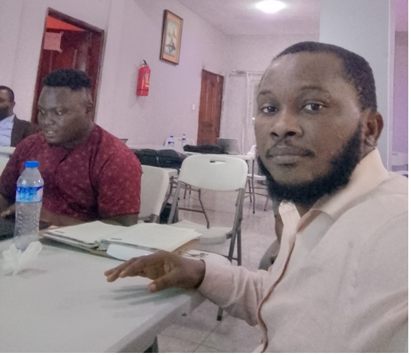

Ezekiel Derrick Toe | WDD 130

Ezekiel Derrick Toe was born with a strong sense of purpose and a deep commitment to service. Over the years, he has built a distinguished professional career grounded in integrity, accountability, and excellence. His leadership and dedication have earned him the respect of colleagues and stakeholders alike, while his steadfast commitment to ethical conduct has consistently guided his contributions.